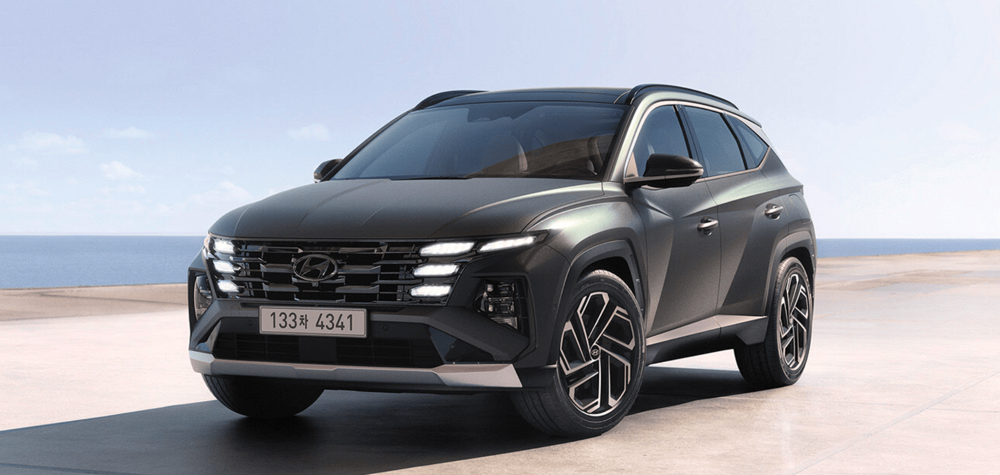

투싼 하이브리드 개인적인 평가 (v3)
투싼 하이브리드 부분변경(NX4 HEV PE) 전륜 모델을 2024년 1월 구입하여 지금껏 계속 운행하고 있다. 이 글은 이 차의 장단점이나 평가를 간단히 정리해 보는 글의 세 번째 버전이다.
 더 뉴 투싼 (현대자동차)
전반적인 승차감
딱히 다른 고급차나 대형차를 충분히 몰아본 경험이 없는 개인으로써 투싼 하이브리드의 승차감은 준수하다고 평가한다.
조수석에 앉은 동승자는 초기에는 썩 마음에 들지는 않은 승차감인 모양이다. 시간이 좀 지나자 익숙해진 건지 아니면 운전 실력이 좋아진 건지 모르겠지만 동승자의 승차감 불만은 없어진 것 같다. 다만 가끔 멀미를 호소하는데 특수한 상황이 겹칠 경우인 것으로 추측된다.
2열 승차감은 아직도 잘 모르는 상태다. 그저 뒷좌석에는 아이들이 주로 타는데 일단 좀 몰다 보면 잠에 들긴 해서 그나마 안심하고는 있다. 하지만 큰 애는 카시트가 답답하다고 하면서 잘 안 타려고 하는 게 혹시 승차감 때문인가 싶어서 좀 마음에 걸린다. 최근에는 창문만 열어주면 별 불만이 없는 것으로 봐서 2열 승차감이 나쁜 수준은 아닌 것 같다.
가솔린과의 승차감 차이는 있는 것 같은 느낌이다. 특히 하이브리드의 저속에서의 세밀한 모터 제어를 통한 승차감 개선은 의미가 있는 것 같다. 안 그래도 가솔린보다 하이브리드가 무게가 무겁기 때문에 좀 더 안정감도 있을 테고 말이다.
세단과 SUV의 승차감 비교는 대체로 무의미한 일이니 하지 말자. 더 낮은 등급의 세단이라도 SUV에 비해 전고가 낮은 만큼 승차감은 세단이 더 좋을 수밖에 없다.
성능
패밀리카로써 더 이상의 성능이 필요할까? 조용하고 힘세고 빠르다. 초 고각 언덕도 무리 없이 올라갔고 고속도로에서도 충분히 넘치는 가속력이었다. 심지어 4인이 타고 짐도 가득 실었어도 힘이 달린다는 느낌을 받은 적은 한 번도 없었다.
아마도 1.6T HEV 조합에서 가장 최적의 성능을 내는 한계 차종이 이 투싼 급이지 않을까 생각된다. 커뮤니티의 평가이긴 했지만 투싼보다 높은 세그먼트에선 1.6T HEV의 힘의 부족이 느껴진다는 평가가 종종 보이니 말이다.
언덕 오르기
평범한 언덕 말고 초고경사 언덕을 오를 일이 가끔 있는데 옛날에 몰던 오래된 차로는 상당히 곤욕스러운 일이었다. 얼마나 언덕이 심하면 브레이크에서 발을 떼면 후진 풀악셀을 밟는 느낌이었으니 말이다. 그래서 옛날 차로는 브레이크에서 발을 떼서 엑셀로 발을 옮기는 순간이 너무나 긴장되고 무서웠던 순간이 많았다.
하지만 투싼은 밀림방지 기능도 있는 데다 오토홀드를 쓸 수도 있어서 언덕에서 상대적으로 덜 무서웠다. 아직까지 오토홀드 없이도 그렇게 밀린다는 느낌을 받은 적은 없는 것 같다. 다만 급경사의 길에서 주차하는 등 정방향이 아닌 상황에서는 약간씩 밀리는 경우가 있기는 하다.
위의 성능 면에서도 평가하긴 했지만 결론적으로 길이 있는 언덕에 투싼이 못 갈 이유는 없을 것 같다. 전진이든 후진이든 각이 어떻든 말이다.
고속도로 주행
고속도로에서의 주행감이나 승차감, 소음 면에서는 딱히 서술할 게 없을 것 같다. 고속으로 달리는 환경에선 고급 차량이 아닌 이상 큰 차이는 없을 것 같다.
고속도로에서 주행보조(스마트 크루즈 컨트롤 등)를 켜니 졸린다. 이건 너무나 큰 단점(?)이다. 물론 그만큼 편하다는 말이다. 시내만 달리다 갑자기 전용도로나 고속도로에 나가면 온 몸과 기분이 편해진다. 다만 가속 설정을 최저로 했음에도 개인적인 운전 성향에 비해 좀 급하게 튀어 나간다는 느낌을 받아서 좀 불안해지는 것은 어쩔 수 없었다.
특이사항으로 조향 보조 기능 혹은 차로 이탈 방지 기능 덕분에 좀 위험한 순간이 있었다. 예를 들어 어떤 자동차 전용도로에서 커브길에 차선이 끊긴 구간을 지나간 적이 있었는데 차가 멋대로 코너 바깥쪽으로 갑자기 핸들을 돌리길래 식겁하는 줄 알았다. 이래서 주행 '보조'구나 라고 절실히 느꼈다.
약간의 단점이 더 있다면 인터페이스 같다. 주행보조 버튼을 누르는 순간 스마트 크루즈컨트롤을 비롯한 온갖 주행보조 기능이 켜지는 건 당연히 좋다. 하지만 이 버튼을 다시 눌러서 비활성화 시켜도 차로중앙유지 기능은 안 꺼지는 게 여전히 이상하다고 생각된다.
고속도로주행보조는 HDA2가 아닌 HDA1이라 차선 자동 변경 기능은 없고 대신 깜빡이를 넣으면 속도를 더 올리는 등으로 보조해 주는데 개인적인 운행 스타일에 맞지는 않았다. 그래서 차선 변경할 때는 그냥 액셀이나 브레이크 살짝으로 일부러 주행보조를 비활성화 한 뒤 수동으로 끼어들고 다시 활성화하는 식으로 운행했다. 어차피 주행보조기능을 쓰는 사람이 차선을 자주 바꿀 이유는 없을 것 같고 말이다.
주행보조기능에서 가장 큰 단점은 정전식 센서가 없어서 스티어링 휠(핸들)을 자주 흔들어 줘야 한다는 점 같다. 직선으로 쭈욱 가는데 스티어링 휠을 흔들어야 한다는 건 오히려 위험해지게 만드는 행위가 아닐지 생각해 봐야 할 것 같다.
참고로 눈이 많이 오는 날에는 주행보조 기능이 동작하지 않을 수도 있다는 점에 주의하자.
정체구간 주행
정체구간에서의 주행이야 크게 서술할 게 있나 싶다. 알아서 전방 주시 잘 하면서 주행해야 할 거다.
물론 핵심은 그게 아니라 주행보조를 켰을 때다. 정체구간에서 주행보조 기능은 상당히 도움이 된다. 편한 건 당연하고, 적어도 전방주시 잘 하고 브레이크 밟을 준비만 하고 있다면 사람이 운전하는 것보다 더 안전할 것 같다는 느낌도 들었다. 알아서 멈추고 알아서 출발해주니 말이다. 다만 차로중앙유지는 상황에 따라 켜지거나 꺼지기도 해서 완전 자동은 아님에 주의하자.
주행보조 시 제동은 그다지 부드럽지 않은 건 좀 불만스럽다. 2열에 아이들이 있다면 긴 정체구간에서 쓰기가 미안해질 것 같다. 따라서 정체구간이 길지 않거나 1열 위주로 탈 때만 쓰는 게 좋을 것 같다는 생각이다.
역시나 눈이 많이 오는 날에는 주행보조 기능이 동작하지 않을 수도 있다는 점에 주의하자. 눈이 많이 올 때는 정체도 심해지는 이 문제까지 겹치면 스트레스 관리에 애를 먹을 지도 모르겠다.
연비
주로 시내 짧은 거리를 운행했으며 장거리는 정말 가끔 운행하는 입장에서 최저 기록은 8.8 km/L, 최고 기록은 55.4 km/L로 찍혔다. 너무 천차만별인 것 같은데 주행거리나 속도, 주행 구간 등 여러 변수가 존재한다.
개인적인 누적 연비는 10 km/L 수준으로 처참하게 낮은데 아무래도 주행하지 않고 공회전 하는 경우가 많아서 그런 모양이다. 특히 아직 새 차 냄새가 완전히 빠지지 않아서 시동을 걸고도 출발하지 않고 창문을 열고 한참을 기다리는 경우가 잦았으니 어쩔 수 없을 것 같다.
고속도로가 포함된 장거리의 경우에는 대체로 14km/L 이상은 나와주는 편이지만 4인 탑승 기준으로는 18km/L 이상 뽑는 것은 좀 무리라는 느낌도 들었다.
관련된 설정으로 회생제동은 과거에는 1 레벨로 설정하고 다녔지만 지금은 0 레벨 즉 기본 상태에서 바꾸지 않는 편이다. 이렇게 해도 타력주행 시 작게나마 충전이 되고 약간 브레이킹 시 회생제동이 잘 걸린다. 그 외에 스마트 회생제동은 시내 주행 시에만 자동 레벨로 아주 간혹 사용할 때도 있었지만 동승객이 있는 경우는 사용하지 않는 편이다.
유지비
사실 유지비를 명쾌하게 서술하긴 좀 힘들 것 같다. 객관적 자료가 없으면 쓸 수 없는 내용이니 말이다. 그래도 관련 있는 부분은 정리해 본다.
주행가능거리 기준으로 설명하자면 기름을 가득 채웠을 때 대략 650km 이상을 주행할 수 있을 것으로 표시된다. 아마도 평균 연비를 기준으로 측정하는 수치로 보이는데 최근 공회전 비중을 줄이고 있어서 총 주행가능거리가 조금씩 늘고 있는 느낌을 받고 있다.
공영주차장 등에서 주차비가 할인되는 건 확실히 도움이 된다. 50% 가량 할인되는게 도움이 안 될 리가 없다. 하지만 공영주차장이 얼마나 많을까 얼마나 자주 쓸까를 더 먼저 생각해 봐야 할 문제 같다.
기타 자동차보험에서 친환경차 할인 혜택이 있기는 한데 이건 보험사마다 다르니 잘 알아보자.
어라운드 뷰
어라운드 뷰는 차량 주변을 3D로 합성해서 보여주는 멋지고 정말 돈 값을 하는 옵션이다. 안 그래도 아파트 주차장이 좁아서 주차 라인도 협소한데 여기에 딱 맞게 넣을 때 큰 역할을 한다. 예전에는 내려서 눈으로 보고 삐져나가 있으면 다시 타서 이동시키고 별 X랄을 했어야 했는데 말이다.
종종 좁은 골목길이나 차량이 빡빡한 주차장에 갇힐(?) 때가 있는데 거리 센서와 함께 이 어라운드 뷰를 잘 이용해 차를 안전하게 탈출(?)시키는 등 정말 큰 도움이 될 때도 있었다. 이 정도면 이미 돈 값은 하는 옵션이다.
다만 한 밤 중에는 돈 값을 못 할 때가 많다. 아무래도 주변이 어두워서 잘 보이지 않는데 차선도 잘 보일 리가 없다. 밤에 간접적으로 빛을 비춰줄 특수한 조명 시스템이 있었으면 좋겠다는 생각이 든다.
참고로 어라운드 뷰는 인스퍼레이션 트림의 경우 파킹어시스트 옵션에 포함되어 있다.
긴급제동
긴급제동이 동작하면 굉장히 위험한 순간일 것 같은데 뭐 틀린 건 아니다. 다만 개인적인 경험으론 그렇게 위험한 경우는 아니었다. 예를 들어 후진 중 옆이나 뒤에 사람이 갑자기 나타나 지나간다거나, 후진 주차 중 뒤차에 너무 가까이 붙었을 때 등 긴급제동에 도움을 받았다. 하지만 어차피 아주 천천히 움직이던 상황이라 그렇게 위험하진 않은 상황이기도 했었다.
뭐 하여간 이 긴급제동도 돈 값을 하는 옵션 같다. 아 옵션이 아니라 기본 기능인가?
참고로 긴급제동이 걸릴 만큼 사물과 가까운 상황에서는 다시 긴급 제동을 걸어주지는 않는 모양이다. 쓰라린 경험(?)으로 익힌 교훈이다.
어쩌다 가끔 유령을 캐치하는지 알 수 없이 긴급제동이 동작할 때도 있다. 놀라운 센서다.
변속 충격(체결감?)
전반적으로 변속 과정이 잘 느껴지지 않을 정도로 가속이나 감속 시 큰 이질감을 느끼지 못 했다. 일상적인 상황에서 이로 인해 불편함은 아마 느낄 일이 없을 것 같다.
특이한 점으로 저속의 어느 구간에서 모터가 약간 치고 나가는 듯한 느낌을 받을 때도 있었다. 특히 감속으로 거의 멈추기 직전에 다시 가속을 하려 할 때 잘 안 나가다 액셀을 꾸욱 밟으면 갑자기 튀어나가는 경우를 자주 겪었다.
비슷하게 오르막길에서 액셀을 약하게 밟아서 속도를 아주 부드럽게 서서히 줄여갈 때도 가끔 살짝 강하게 모터나 엔진이 개입되는 느낌을 받을 때도 있다. 하지만 아이가 동승하고 있지 않다면 이렇게 심하게 부드러운 운행을 할 이유는 없을 것 같아서 별 문제는 아니라고 생각된다.
소음
페이스리프트 전의 투싼 하이브리드의 단점 중 가볍게 하나 꼽히는 게 내연기관이 개입될 때 내부에서 소음이 크게 느껴진다는 평가가 있었다. 그래서 페이스리프트 된 더 투싼 하이브리드도 그러지 않을까 생각했다.
그런데 실제로 몰아보면서 갑자기 소음이 커진다거나 시끄럽다거나 하는 느낌은 차 안에서는 못 받았다. 엔진이 개입될 때의 소리도 갑자기 커지는 게 아니라 부드럽게 커지는 느낌이었다. 어쩌면 엔진오일 증가 문제 때문에 이전에 비해 엔진이 더 자주 개입하는 걸 수도 있다. 고속도로에 진입해서 급하게 가속할 때도 소음이 갑자기 커진다는 느낌을 받지는 못했다.
엔진 소리 자체도 불쾌감보다는 오히려 기분 좋은 경쾌감이 느껴지는 사운드라고 생각한다.
물론 소음이 작은 것은 아니다. 창문을 열어놓은 상태에서 시동이 걸리면 상당히 시끄럽기는 하다. 그리고 뒷좌석에서는 소음을 상대적으로 크게 느낄 가능성은 있다. 2중 접합 유리는 앞 좌석에만 있으니 말이다. 그리고 조용한 곳에서는 엔진이 돌아갈 때 시끄러운 것은 어쩔 수 없다.
엔진이 돌지 않을 때 외부에서의 소음이 적은 건 확실한 것 같다. 좁은 길을 지나갈 때 길을 막고 있던 행인이 가까이 붙어도 차를 눈치채지 못하는 경우가 매우 많았다. 어쩔 때는 시끄러운 편이 더 낫나 생각되기도 할 정도다.
전체적인 공간
지금의 투싼 급이면 4인 가족 패밀리카로 충분한 공간이라고 생각한다. 아직까지 실내가 좁아서 불만족스러웠던 경험이 없었다. 원래 5인승이긴 하지만, 전열 2인, 후열에 카시트 2대 및 성인 1인이라는 매우 빡빡한 5인(?)이 승차하는 것도 가능하다. 물론 카시트 사이에 끼이는 사람은 체형에 따라 가능성도 달라지고 당연히 좀 불편하긴 하다.
전체적인 공간을 봤을 때 투싼을 4인 패밀리카로 쓰기엔 약간의 조건이 있다. 바로 유모차는 한 대만 싣는다는 조건이다. 만약 아이가 둘인데 나이 차이가 별로 안 나거나 쌍둥이라서 유모차를 2대 혹은 대형 사이즈나 왜건 등을 실어야 한다면 안타깝지만 이보다 더 큰 급의 차량은 선택이 아닌 필수인 것 같다. 하지만 아이가 둘이라도 한 명은 유모차를 안 타도 될 만큼 나이가 들었다는 가정에서는 충분히 4인 패밀리카로 손색이 없는 공간인 것 같다.
다만 운전자 본인의 덩치가 크다면 시승을 꼭 해 볼 것을 권한다. 덩치 큰 사람에게 투싼의 운전석은 좀 작을 지도 모르겠다.
트렁크
투싼 뒤에서 트렁크를 직접 열 때는 간단히 버튼 하나만 누르면 쑥 자동으로 열리고 다시 버튼 하나만 누르면 자동으로 닫히는데, 이런 걸 경험해 보지 못한 이에겐 참으로 편한 신문물이다.
그런데 스마트키나 운전석에서 열 때는 왜 한 번에 자동이 아닌 꾹 누르고 있어야 하는지는 좀 불만스러웠다. 안전 때문이라고는 하지만 열릴 때 자동으로 문제가 있으면 멈추도록 만드는 게 상품성은 확실히 좋았을 텐데 말이다. 닫힐 때도 뭔가 걸리면 자동으로 멈추게 하는 것 정도는 기본이 되어야 하지 않을까 생각되기도 했다.
트렁크 공간을 대충 설명하자면 폴딩 없이 최대한 짐을 많이 실었을 때는 유모차 하나, 27인치 모니터 3대가 들어갈 만한 크기의 골판지 상자, 마트에서 주는 쇼핑백 하나 정도가 들어가고도 룸 미러를 보는 데 문제가 없었다.
트렁크 공간은 넓다고 생각하면 넓지만, 아주 큰 짐을 넣을 때면 작게 느껴지는 건 어쩔 수 없을 것 같기도 하다. 하지만 SUV의 장점, 즉 뒷좌석 폴딩으로 확 넓어지는 트렁크 공간을 체감할 수도 있으니 무작정 실망할 필요는 없을 것 같다. 그저 뒷좌석 모두가 카시트에 점령되면 무의미한 소리지만 말이다.
블랙박스(feat. 빌트인캠2)
사제 블랙박스를 달 필요가 없을 정도로 충분한 기능을 제공한다. 약간의 이벤트에도 해당 이벤트가 어디서 발생했는지 표시해 주는 등 차 안에서 블랙박스의 내용을 볼 때도 충분하다.
주차 중에도 차체에 충격이 있을 경우 자동으로 녹화가 되고 이를 블루링크 앱을 통해 알림을 받고 아예 원격으로도 볼 수 있게 해 준다는 점은 정말 신세계인 것 같다. 하지만 그 충격이란게 대부분 주변에 큰 차가 지나간 경우라서 어떨 때는 왜 이렇게 민감한가 생각되기도 한다.
다만 약간 불편한 점이 있다면 블루링크 앱에서 자꾸 ‘녹화가 잘 끝났다’는 알림을 보내오는 게 귀찮다는 점 정도일 것 같다. 그 외에 기본 사양에선 주차 중 상시 녹화 시간이 좀 짧기 때문에 필요하다면 SD 카드를 별도로 추가해야 할 수도 있다.
어쨌든 가성비 측면에서도 제법 효율적이라고 생각되는 옵션 같다.
베이비 모드
드라이브 모드를 베이비 모드 - 정확히는 MY DRIVE를 베이비 모드로 세팅한 경우 - 로 세팅하고 운행하면 확실히 출발 때가 답답하다는 것을 느끼긴 했다. 좋게 말하자면 정말 부드럽게 출발한다.
다만 멈출 때나 과속방지턱을 넘을 때는 얼마나 차이가 있는 지는 아직도 잘 모르겠다.
앞서 언급했다시피 간혹 답답하다는 느낌이 들 때도 있어서 항상 사용하지는 않지만 아이들이 타고 있고 가끔 컨디션이 별로라고 느껴질 때는 해당 모드를 설정하는 편이다.
HUD
HUD가 있으니 클러스터를 거의 안 보는 것 같다. 해봤자 남은 주행 가능 거리나 기름 양 확인할 때, 회생제동 잘 되나 혹은 회생제동 레벨이 얼마인지 확인할 때가 아니면 클러스터를 볼 일이 없는 수준이니 말이다. 그만큼 확실히 편하고 돈 값을 하는 기능이다. 특히 전방 주시 시점에서 시점을 크게 안 옮겨도 되니 안전 측면에서도 정말 유용한 옵션이라고 생각된다.
지금은 좀 익숙해진 것 같지만 여전히 HUD가 맺히는 초점이 잘 안 맞는 것 같은 건 완벽하게 적응되지는 않는 것 같다. 하지만 인식에 문제가 있는 수준은 아니라서 별 불만은 없는 편이다.
HUD 크기가 작다는 평이 있긴 하지만 개인적으론 시인성에 문제는 없어서 불만도 없는 편이다.
후면 깜빡이
투싼(NX4)의 가장 큰 단점은 후면 깜빡이 위치인 것은 여전히 변함이 없다. 아마도 투싼 구입을 꺼리는 요소 두 가지를 꼽으라면 디자인 취향을 빼면 이 후면 깜박이 위치가 가장 큰 원인일 것이다.
그런데 지금에 와서 이렇게 낮은 후면 깜빡이도 그렇게 큰 문제는 아니다라고도 느껴진다. 아직도 끼어들기 하다가 신경질적인 반응을 받아 본 적은 없다. 그리고 직접 운전할 때 깜빡이가 낮은 차가 끼어든다고 위험했을 법한 상황은 아직 겪은 적이 없다. 그리고 깜빡이가 높든 낮든 갑자기 끼어드는 차는 어쨌든 위험천만했다. 역시 사람은 적응의 동물이라 깜빡이가 낮아도 다 적응하게 되어있다.
개인적인 경험으로도 앞 차의 후면 깜빡이가 너무 낮아서 짜증나는 상황을 겪은 적은 없었기도 하다. 애초에 끼어들기 하려는 차는 행태는 깜빡이를 안 보더라도 감각적으로 익혀지는 것 같기도 하다.
어쨌든 깜빡이 위치든 뭐든 무엇보다 중요한 것은 안전운전 그리고 방어운전이다.
보닛
보닛(본네트)은 차를 인수하고 난 뒤 바로 궁금해서 열어본 적이 한 번 있었다. 보닛 자체는 꽤나 무거웠다. 고정시키려면 꼬챙이를 걸어야 해서 불편했고 꼬챙이가 구부려져 갑자기 보닛 뚜껑이 떨어질 것 같은 불안감이 느껴지기도 했다.
그런데 보닛을 직접 열 일이 얼마나 될까 생각해 보니 이 정도 불편함은 그냥 잊혔다. 어차피 보닛을 자주 열 사람은 아무래도 정비사일 테니 말이다.
외장
외장 색상이 아마존 메탈릭 그레이인데 직사광선이 없는 곳에서는 어두운 회색에 까깝게 보이지만 빛에 따라서 녹색과 펄이 비쳐 보이는 독특한 색상이다. 특정 상황에선 우중충한 녹색으로 보일 때도 있긴 하다.
이런 다크 그레이 계열 색상은 특히 오염에 강하다고 느끼고 있다. 주변에 다니는 투싼을 통해 적어도 흰색에 비해 회색이 오염이 심하게 튀지 않고 검은색에 비해서도 더러워졌다는 느낌을 덜 받는 것 같다. 그래서 개인적으로는 차를 대충 몰려는 사람에게는 회색 계열 색상을 추천하고 싶다. 강력한 이미지의 그릴과 따로 노는 느낌의 흰색과 빨간색은 특히 안 어울리는 것 같기도 하고 말이다.
그래서 아직도 세차장에 가보지 않았지만 차 상태는 깨끗하다고 느껴진다. 그저 먼지만 털고 물왁스로 정말 어쩌다 한번 닦았고 유리만 전용 세정제로 닦아주고 있다. 차가 너무 커서 세차할 엄두가 잘 안나기도 하고 말이다. 더 큰 차는 도대체 어떻게 닦아야 되나 모르겠다.
회전반경 이슈
최근 모 커뮤니티를 통해 투싼의 회전반경이 크다는 평가가 종종 보인다. 작은 차체에 실내를 넓히기 위해 내부 부품이 좁은 보닛에 몰리다 보니 앞 타이어가 돌아갈 공간 확보가 부족했다는 주장이다.
객관적으로 공개된 정보는 아니어서 뭐라 말은 못 하겠지만, 개인적으로 구형 아반떼와 비교해서 좀 크게 회전한다고 느껴질 때가 있다. 특히 유턴이나 주차 라인에서 빠져나갈 때 잘 느껴진다.
하지만 그렇다고 운전이나 주차, 출차에 방해가 될 정도는 아니라고 생각한다. 특히 운전 과정에선 유턴 할 때 한 번에 안 될 경우를 빼곤 회전반경으로 인해 불편함을 느껴본 적은 거의 없는 것 같다.
결론
더 뉴 투싼 하이브리드(NX4 HEV PE)는 짐이 그렇게 많지는 않은 4인 가족이 타기에 무난하고, 크기도 구축 아파트 주차장 라인에 꽉 차게 들어가는 남들에게 민폐 안 주는 아슬아슬한 크기에, 연비도 좋고, 성능도 무난한 한마디로 ‘적당한’ 패밀리 카다. 물론 혼자 타기에도, 배우자나 이성 친구와 타기에도 더없이 좋은 차 같다.
하지만 승차감 특히 2열 승차감을 중요하게 따진다면 애초에 SUV는 후보에 넣지 않는 게 정답이니 잘 생각해보자.